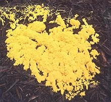

SAFARI
Users
- Key to the Animals - and their evolutionary descent.
- Who Eats What Animals? - and why others don't
- Links
Plants & Animals
stem from a common ancestor named LUCA (Last Universal Common Ancestor) which existed nearly 4 billion years ago. Complex Eukaryote cells developed about 2 billion years ago, and it was perhaps about 1.7 billion years ago that the Plant and Animal lineages separated. Both were still single celled, because multi-celular Eukaryotes first appeared about 1.4 billion years ago. About 1.2 billion years ago, Eukaryote cells began to adopt sexual reproduction, greatly accelerating the pace of evolution.Opisthokonts
About 1.3 billion years ago, after a number of intermeidate steps, complex Opisthokont cells had developed within the Animal lineage, Podiata. Perhaps 1.2 billion years ago, two populations of single celled Opisthokonts separately developed into complex multi-celular organisms, Animals and Fungus.
Unlike oganisms in the Plant lineage, Opisthokonts cannot generate their own food from sunlight and raw materials, so both Animals and Fungi live by digesting other organisms, living and/or dead.
Fungus
As the Fungi branched off from the Animal lineage (or vice versa), we have branched them off into their own Fungus page.
Animals
 How could a single celled proto-fungus evolve into animals? That seems totally absurd - yet we have a current example of how it could happen. Slime molds are no longer considered fungus, but are similarly structured. They belong to the Amoebozoa, which are thought to have split from the animal lineage a little before the Opisthokonts evolved and split into animals and fungus. Ordinarily they are independent single cell entities, but when times are tough and it's time to move on, they assemble into a multi-cell creeping critter, an "animal" if you will, and head off to seek their fortune. Some cells modify themselves to fill particular roles, as we would expect from a proto-animal. Slime mold photo by Dr. Jonathan Gott contributed to the Public Domain.
We have not found a transition form between proto-fungus and animals, and it may be extinct, but we have stumbled on several other "extinct" transition forms, so it's possible we eventually will find one.
Here we present a chart of the edible animals. It follows their evolutionary descent but for simplicity we include only animal lines that are used by humans for food. Extinct lines are omitted (you can't eat those) as are intermediate evolutionary stages that aren't of culinary interest. All the first level entries were already in existence during the Cambrian era, about 530 million years ago. Very little is known about animal evolution in the Precambrian due to a very faint fossil record.
- Cnidaria (Jellyfish, corals, anemones)
- Arthropoda (insects, etc.)
- Insects (Hexapods)
- Spiders & Scorpions (Chelicerates)
- Centipedes (Myriapods)
- Crustaceans
- Barnacles
- Decapods
- Echinoderms (urchins, sea cucumbers, starfish)
- Molluscs (mollusca)
- Bivalves (clams, mussels, oysters)
- Gastropods (snails, land and sea)
- Octopus, Squid & Cuttlefish
- Chordata (vertebrates, etc.)
- Sharks, Skates & Rays (chondrichthyes) - cartilaginous fish
- Osteichthyes (bony fishes)
- Ray Finned Fish (Actinopterygii) - all the familiar fish
- Lobe Finned Fish (Sarcopterygii) - Coelacanths still live!
- Tetrapods
- Amphibians (Salamanders, Frogs)
- Anapsids (early reptiles - extinct unless Turtles are Anapsids - controversial)
- Synapsids (mammal-like reptiles)
- Mammals
- Marsupials (Possum, Kangaroo)
- Monotrems (Platypus, Echidnas) - egg laying mammals
- Eutheria
- Beefs - Cows & Buffalo
- Goats - kid
- Pigs - pork, ham
- Rodents & Rabbits
- Sheep - lamb, mutton
- Dogs & Cats, Bears
- Horse, Camel, Llama
- Armadillo
- People
- Mammals
- Diapsids
- Turtles (recently moved from Anapsids - controversial)
- Lizards and Snakes (Lepidosaurs)
- Archosaurs
- Dinosaurs & Birds
- Alligators & Crocodiles
- Tetrapods
Who Eats What Animals?
Whether it's "right" (or healthy) to eat our fellow critters has been intensely debated for thousands of years with no resolution. Parrots have learned to talk (compose and speak meaningful sentences for their own purposes), less vocal animals have been shown to understand sentences. Ravens form clubs, use tools and can think out problems. Sociological studies show we're all pretty similar, so traditional notions of human exceptionalism and dominion over animals really don't wash.
On the other hand, it's been shown that all animals, including ourselves, live by eating other living things, and many live exclusively on other animals, and in some cases animals of intellectual achievement superior to their own - so it's been pointed out this is the natural order. An order in which we participate - until something eats us.
So it all boils down to a matter of personal viewpoint, or the strictures of your religion (which is also a personal viewpoint). I was a vegetarian for some time (though not a very "ethical" one), and not at other times, so I'll make no condemnation one way or the other.
North Americans
are predominantly Christians, a powerful subtribe of the Pagans, and have no religious food prohibitions except for a few small sects that adhere more or less to Jewish law or promote vegetarianism. Most churches don't even forbid eating people (though it's rarely done).By secular law and/or custom, Americans are forbidden to eat dog, cat and horse. Just about everything else is fair game. These prohibitions have no logic but are the result of pressure by pet lovers. Pigs are smarter than dogs and cats, and can be just as friendly, and they're way smarter than horses, but are eaten in quantity by pet lovers because they're not cute and cuddly. The horsey set has even pressured government to forbid exporting horses to places that do eat horse, despite the fact that horses, in the wild, kill and eat smaller animals, and have killed and eaten people.
Of course North America includes vegetarians of every possible stripe, including a strong contingent of "vegans" who won't eat any animal or use any animal derived products for anything. Eggs, milk products and honey are off their menu because they amount to "exploiting animals". Of course, they have no strictures against exploiting people, ignoring that people are animals too.
The U.S. is also host to many large and strong immigrant communities and Native American communities, so an occasional cat, dog or horse does end up in the stew pot - you just have to be a little careful about who knows. The U.S. also hosts large contingents of Jews, Muslims, Hindus and other religious persuasions that follow their own dietary rules.
Europeans
are much like Americans but with some variations. The French, for instance, do eat horse, though it has declined in popularity, but it is still quite popular in southeastern Europe. I have it on good authority that the Germans ate plenty of cats during World War II, and the English ate some too (for cat, use any rabbit recipe, they cook and taste the same).Europe, due to past conquest of distant countries and importation of labor in times of worker shortage (especially Muslim Turks in Germany and Indians and Pakistanis in England) also has plenty of religious contingents following their own rules.
Hinduism
is a British "word of convenience" for a large number of schools of though in India, both Vedic and non-Vedic. While some sects are vegetarian, many Hindus do eat meat, though most don't eat cow. Cow is clearly not forbidden by the sacred Vedas (which provide guidance on eating them), but from later political / religious prohibitions inspired by the Krishna cult, anti-Islam sentiment and economics (better return on investment from milk than meat).Pig is not prohibited to meat eating Hindus but is rarely eaten due to pure economics (not enough high quality grains and vegetables to feed both the people and pigs) and due to a suspicion of the animal possibly picked up from other cultures. Pigs are eaten in northeastern areas influenced by China, and where wild pigs were traditionally hunted (Kodava and Tamil Nadu).
The main meat eaten by Hindus is goat, which British conquerors were pleased to call "mutton" so it would taste better. In areas of India influenced by Islam (north), lamb and mutton predominate for both Muslims and Hindus.
Hindus who eat meat avoid skin and fat - it is always removed before cooking.
Many Hindus are vegetarians of various degrees of purity. On the east coast they excuse fish and shellfish consumption by defining fish as fruit (fruit of the sea). On the west coast many won't eat anything that even suggests meat and go to great effort not to harm insects or even "nosee'ems".
Brahmans, the highest Hindu cast, are supposed to adhere to the "Brahman diet" (introduced to Americans by the Hari Krishna folks), which forbids any meat, onions, garlic, shallots, or mushrooms - but in Kashmir Brahmans eat meat, but not cow.
Buddhists
are supposed to go through life "doing no harm", so some sects are vegetarians. Their presence in China, Japan, Tibet and Southeast Asia has provided those area with a good number of excellent vegetarian recipes. Of course, in Tibet, vegetarianism is often almost impossible.In Southeast Asia, where Theravada Buddhism predominates, animals are widely eaten, but priests are expected to be vegetarian. Since they live entirely by begging, there is an escape clause. Strict Buddhists may accept meat provided it was not in any way prepared for them or as a result of them - in other words, they did no harm. If you invite a strict Buddhist to dinner, you are responsible for providing vegetarian food and no meat will be accepted. If, on the other hand, the Buddhist showed up completely unexpectedly and meat was what there was, you could offer it and it may be accepted, or may not.
Of course in the U.S. we have traditional Buddhists of all sects plus any number of varieties of half baked "Buddhists" who follow any set of rules they fancy. If they think they're getting off the wheel of Karma that way they may have to rethink in their next life, but, hey, life's not all that bad, really.
Jews
have a strict set of dietary guidelines, the Kosher laws (A3), which are adhered to more or less strictly depending on the sect of Judaism a person belongs to and personal viewpoint. Kosher is an anglicized form of Hebrew kasher which means "fit" or "proper".Pig is completely forbidden for eating, but the Jews are not pathological about pig like the Muslims are - you can sell them, use leather made from them, just not eat them.
Edible animals must chew a cud and have a cloven hoof: cattle, antelope, buffalo, bison, deer, eland, gazelle, goat, hart, moose, ox, sheep and yak. - though certain parts (brain, major nerves, etc.) are forbidden as well as any blood at all - thus killing and salting (koshering) rules must be strictly followed.
Forbidden are: camel, dog, dolphin, donkey, horse, pig, porpoise, rabbit, hyrax, rodents, whale, all reptiles, frogs, lizards, snakes, turtles, toads, all insects (except certain locusts (A5)) and other invertebrates, and crocodiles (though now known to not be reptiles but related to birds they still don't qualify).
Edible birds must have a projecting claw, a crop and a gizzard the inner lining of which can be peeled away: chicken, Cornish hen, duck, dove, goose, pigeon, songbirds and turkey.
Forbidden birds are wild birds and birds of prey: eagle, heron, ostrich, owl, pelican, stork, swan, vulture, raven and crow.
Edible fish must have both fins and scales that can be removed without breaking the skin: anchovy, bass, blackfish, bluefish, butterfish, carp, chub, cod, flounder, fluke, haddock, halibut, herring, mackerel, mahimahi, mullet, perch, pickerel, pike, pompano, porgy, red snapper, sablefish, salmon, sardine, shad, smelt, snapper, sole, tilefish, trout, tuna, weakfish, whitefish and whiting.
Among forbidden fish are: catfish, eel, lamprey, marlin, rays, puffer, sailfish, shark, sturgeon, swordfish and turbot.
Forbidden seafoods are all shellfish and mollusks, including: clam, lobster, octopus, oyster, scallop, squid, shrimp and snail (the popularity of expensive sushi bars among Jewish professionals in Los Angeles and what they eat there is strictly between them and their rabbi).
Milk products and meat must not be mixed nor eaten at the same meal, and separate cooking utensils are required for the two.
In general, great care must be taken to insure that no kosher food is in any way contaminated by or comes in contact with any non-kosher food or substance, or machinery and utensils that have.
The primary purpose for all these rules was to make Jews so different from other peoples they could not mingle with them. These rules are so effective in that regard that the majority of North American Jews have come to ignore them in part or in whole.
Muslims
follow Islamic food law which is derived from the Jewish kosher law and is very similar but particularly sticks at pig in any shape form manner or use. Acceptable foods are called Halal (lawful), unacceptable are haram (unlawful) and questionable items are mushbooh (suspected) and should not be consumed (A4).Alcohol and other intoxicants are strictly forbidden - though the Turks seem to have received a special dispensation from Allah on this item - either that or they're all going straight to Hell with the rest of us. Because a literal reading of the Koran forbids "wine", some Muslims feel free to drink arak (a hard liquor similar to Greek ouzo) and beer.
All halal animals must be properly slaughtered and must not have been dead before slaughter. No animal that was killed in the name of anyone other than Allah is acceptable. As you might expect, halal meat is extra expensive, and there is fraud.
Chinese
(other than the Buddhists) are very big on eating animals. They particularly favor pig, chicken and duck. Beef and fish are also used, and Lamb and Mutton in the Muslim regions. In the Southeast, they'll stop at nothing (fried scorpions, anyone? Tarantulas?). Recently, restaurants there were promoting rat, because they'd already served all the snakes that had been eating the rats - so plenty of rats.Chinese saying, "The Cantonese will eat anything with legs except a table, and anything with wings except an airplane". Actually, this underestimates the Cantonese - they are perfectly fine with eating things that have neither legs nor wings. There is now some conflict between Northern China and Southeast China. Many northerners have adopted a Western attitude towards cats and dogs as pets, while they are still eating them in the southeast.
Chinese Buddhists are supposed to be strictly vegetarian. Buddhist monks in this region grow and process their own food so they can avoid meat entirely. This extends down into Vietnam, but only 12% of Vietnamese are Buddhist, there are a few Christians, and the rest are Pagans.
Korea
is big on beef, fish, and moderately hot chilis. Pork is also used, and everything is served with rice and kimchee (pickled cabbage (and/or other vegetables) usually with red chili, but sometimes not).Japan
is a land of two major religions, Shinto, the indigenous religion, and Zen Buddhism, originally imported from Korea. To my knowledge, Shinto has no restrictions on eating animals. Zen Buddhism at one time forbade (by command of the Emperor) eating animals except fish and birds, but in later times Japanese Zen has de-emphasized vegetarianism, though it is still respected. These two religions are now so intertwined the saying is, "You're born Shinto, and die Buddhist".Southeast Asia:
While Buddhists in Vietnam adhere to Chinese Buddhism, they account for only 12% of the population. The vast majority adhere to the indigenous Pagan / Animist religion with dashes of Confucianism and Buddhism added. Any restrictions on eating animals are local. Thailand is 93% Theravada Buddhist, but in much of the country this Buddhism is strongly influenced by indigenous Pagan / Animist religion and Hinduism. Pretty much all animals are on the menu. In Laos it's 66% Theraveda and 31% Pagan / Animist, but again, the Buddhism is heavily influenced by the indiginous religion. Cambodia is 97% Theravada Buddhist, but with strong traditional influence from Hinduism. There are no restrictions on eating animals except those followed by priests.
Links
- A2 - Slime Molds - UC Berkeley
- A3 - Kosher information - Kashrut.com
- A4 - Halal information - Halal Foundation
- A5 - Kosher Locusts - Cleveland JewishNews.com